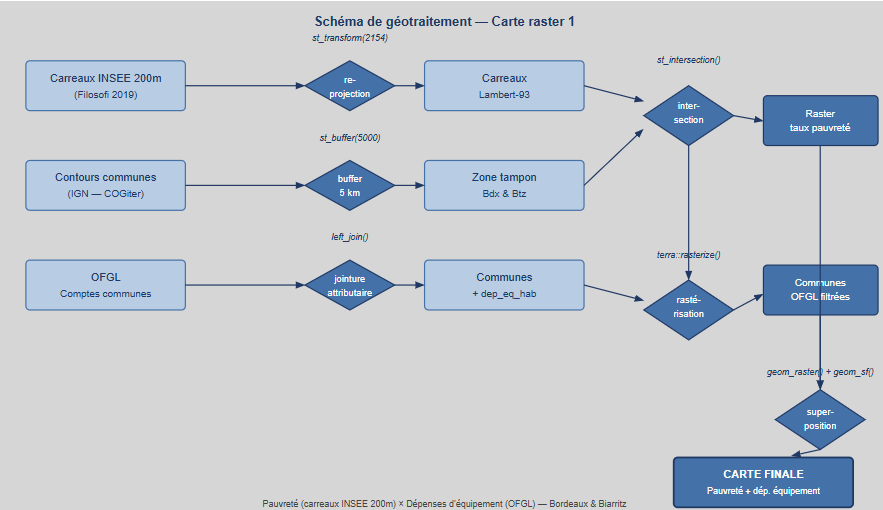

Cette page présente les géotraitements de type raster mobilisés dans ce projet. Contrairement aux données vecteur qui représentent des entités géographiques discrètes, les données raster offrent une lecture continue du territoire, particulièrement adaptée à la superposition de plusieurs couches d’information à des échelles différentes.
Dans ce projet, la rastérisation consiste à convertir les carreaux
Filosofi (initialement des polygones vecteur au format GeoPackage) en
surfaces continues via la fonction terra::rasterize(), afin
de les superposer aux données communales OFGL. Deux cartes de synthèse
étaient prévues, croisant données carroyées fines et données communales
agrégées. En raison de difficultés techniques rencontrées lors du
traitement, ces cartes n’ont pas pu être produites — leur conception et
leur intérêt analytique sont néanmoins présentés ci-dessous.

Figure 1 — Schéma de géotraitement raster : rastérisation des carreaux Filosofi et jointure avec les données OFGL, jusqu’à la superposition des couches.
| Couche | Source | Variable | Représentation |
|---|---|---|---|
| Carreaux 200m Filosofi | INSEE (2019) | Taux de pauvreté (%) | Dégradé rouge/vert, rastérisé via terra |
| Comptes consolidés des communes | OFGL (2024) | Dépenses d’équipement (€/hab) | Aplat bleu par commune |
Cette carte devait superposer deux niveaux de lecture :
left_join() et affichées en aplat bleuLes deux villes — Bordeaux et Biarritz — devaient être représentées côte à côte pour permettre une comparaison directe.
# Rastérisation des carreaux Filosofi
r_template <- rast(ext(carreaux_bdx), resolution = 200, crs = "EPSG:2154")
raster_pauvrete <- terra::rasterize(carreaux_bdx, r_template,
field = "taux_pauvrete")
# Jointure OFGL sur les communes
communes_ofgl <- communes %>%
left_join(ofgl, by = c("INSEE_COM" = "code_insee"))
# Rastérisation des communes avec dépenses d'équipement
raster_depenses <- terra::rasterize(communes_ofgl, r_template,
field = "dep_eq_hab")
# Superposition des deux couches
ggplot() +
geom_raster(data = as.data.frame(raster_pauvrete, xy = TRUE),
aes(x = x, y = y, fill = taux_pauvrete)) +
scale_fill_gradient(low = "green", high = "red") +
geom_sf(data = communes_ofgl, aes(color = dep_eq_hab),
fill = NA, linewidth = 1) +
scale_color_gradient(low = "#cce5ff", high = "#004080")Cette carte aurait permis de croiser deux indicateurs clés de la ségrégation socio-spatiale : la concentration de la pauvreté à l’échelle fine du carreau, et le niveau d’investissement public communal. L’hypothèse sous-jacente est que les communes qui investissent peu en équipements coïncident avec les zones de forte pauvreté, formant ainsi des territoires doublement défavorisés.
La comparaison Bordeaux / Biarritz aurait été particulièrement éclairante : à Biarritz, la dimension touristique de la ville influence probablement fortement les dépenses d’équipement, orientées vers des infrastructures d’accueil et de loisirs plutôt que vers des équipements de proximité pour les résidents permanents. Ce contraste avec Bordeaux, dont les dépenses reflètent davantage les besoins d’une métropole en croissance, aurait permis d’enrichir l’analyse des causes et conséquences des inégalités territoriales.
⚠️ Note technique : la production de cette carte s’est heurtée à des difficultés lors de l’étape de rastérisation et de superposition des couches (
terra::rasterize()+geom_raster()). La carte n’a donc pas pu être finalisée, mais la chaîne de traitement est présentée ci-dessus.
| Couche | Source | Variable | Représentation |
|---|---|---|---|
| Carreaux 200m Filosofi | INSEE (2019) | Part de logements sociaux (%) | Dégradé beige/violet, rastérisé via terra |
| Comptes consolidés des communes | OFGL (2024) | Score composite fiscal (TVA + impôts normalisés) | Aplat orange par commune |
Cette carte devait croiser deux dimensions complémentaires de la ségrégation spatiale :
# Calcul du score composite fiscal
communes_ofgl <- communes_ofgl %>%
mutate(score_fiscal = scale(tva_hab) + scale(impots_hab))
# Rastérisation des carreaux — logements sociaux
raster_logsoc <- terra::rasterize(carreaux_bdx, r_template,
field = "part_log_soc")
# Rastérisation des communes — score fiscal
raster_fiscal <- terra::rasterize(communes_ofgl, r_template,
field = "score_fiscal")
# Superposition
ggplot() +
geom_raster(data = as.data.frame(raster_logsoc, xy = TRUE),
aes(x = x, y = y, fill = part_log_soc)) +
scale_fill_gradient(low = "beige", high = "purple") +
geom_sf(data = communes_ofgl, aes(color = score_fiscal),
fill = NA, linewidth = 1) +
scale_color_gradient(low = "#ffe0b2", high = "#e65100")Cette deuxième carte proposait une double lecture de la ségrégation spatiale centre/périphérie, en croisant la concentration des logements sociaux — indicateur de la composition sociale du parc résidentiel — avec la faiblesse des ressources fiscales communales.
L’intérêt de cette approche réside dans la lecture à deux échelles simultanées : celle du carreau (200m), qui capture les contrastes internes fins au sein d’une même commune, et celle de la commune, qui situe chaque territoire dans un contexte fiscal plus large. Cette double échelle aurait permis d’identifier des configurations comme des communes fiscalement faibles abritant une forte concentration de logements sociaux, signe d’une ségrégation à la fois sociale et fiscale.
Appliquée à Bordeaux et Biarritz, cette carte aurait enrichi la comparaison en ajoutant une dimension de politique du logement à l’analyse des inégalités, et aurait permis d’interroger le rôle des ressources fiscales locales dans la reproduction ou l’atténuation des ségrégations spatiales.
⚠️ Note technique : comme pour la carte raster 1, des difficultés techniques ont empêché la finalisation de cette carte. La variable
part_log_socn’était pas disponible directement dans le fichier Filosofi utilisé et aurait nécessité un retraitement des données sources.
Bien que les deux cartes raster n’aient pas pu être produites, la démarche méthodologique engagée illustre l’intérêt du croisement multi-sources et multi-échelles en SIG :
| Carte | Croisement | Échelles | Apport analytique |
|---|---|---|---|
| Raster 1 | Pauvreté × Dépenses d’équipement | Carreau + Commune | Lien entre investissement public et concentration de la pauvreté |
| Raster 2 | Logements sociaux × Score fiscal | Carreau + Commune | Double ségrégation sociale et fiscale |
La rastérisation via terra::rasterize() constitue une
étape clé de ce type d’analyse : elle permet de passer d’entités
discrètes (polygones) à une surface continue, facilitant la
superposition et la lecture visuelle de phénomènes spatiaux
complexes.
Les géotraitements raster prévus dans ce projet visaient à enrichir l’analyse des inégalités socio-spatiales par un croisement d’indicateurs à deux échelles complémentaires. Si les difficultés techniques rencontrées n’ont pas permis de produire les cartes finales, la conception méthodologique de ces traitements — rastérisation, jointure attributaire, superposition de couches — témoigne d’une approche SIG avancée, capable de mobiliser des sources hétérogènes pour produire une lecture synthétique et multi-dimensionnelle des territoires étudiés.